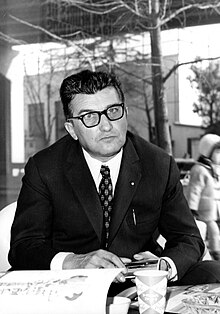

|  |
Ferruccio Lamborghini en torno a 1965.
Terminada la Segunda Guerra Mundial, Ferruccio, quien había servido en un destacamento de transporte para el Ejército Italiano, comenzó a comprar sobrantes de vehículos militares para convertirlos en maquinaria agrícola. Tal fue el éxito de su nuevo negocio que, en 1960, Lamborghini ya era el tercer fabricante industrial italiano en el sector de la construcción de maquinaria agrícola, especialmente de tractores.
Con las ganancias obtenidas, Ferruccio empezó una vida opulenta, adquirió algunas propiedades y, sobre todo, muchos coches deportivos como Alfa Romeo, Mercedes-Benz, Lancia, Maserati y Ferrari. Era un admirador de Enzo Ferrari por la forma en que mantenía su empresa, pero siempre tuvo una dificultad: Ferruccio tenía problemas mecánicos con sus Ferrari. El motivo en particular, y la gota que colmó el vaso, fue el de su Ferrari 250 GTB. Tras numerosas revisiones en el taller mecánico, todavía fallaba. Ferruccio decidió comunicarlo a uno de sus mecánicos quien, tras desarmarlo y verificarlo, descubrió que era el mismo que utilizaba en sus tractores, pero con un precio más alto al estar en un automóvil deportivo, lo que le enfureció. Cansado de tener que soportar estos inconvenientes, entabló una conversación con el mismo Enzo Ferrari que pasó a la historia.
"Los Ferrari solamente me creaban problemas». «Un día, ya harto de mandarlos al taller, llamé a Enzo para decirle que sus coches eran pura basura". "Y me contestó que un fabricante de tractores no podía entender sus coches…"
Según las palabras del mismo Ferruccio Lamborghini.
A partir de esta curiosa discusión, el iracundo propietario empezó a maquinar la idea de fabricar automóviles deportivos para competir con la marca del Cavallino Rampante. El primer Lamborghini fue el 350 GT, luego llegaron el 400 GT y el que fue conocido como el primer superdeportivo: el Miura, que se presentó en el Gran Premio de Mónaco, diseñado por Marcello Gandini para el Gruppo Bertone. Llegaron luego variantes SV, J y la XQ de carreras.
Ferruccio se instaló en Sant'Agata Bolognese, provincia de Bolonia, a pocos kilómetros de Maranello, para rivalizar con su vecino Enzo Ferrari a raíz de una discusión por la calidad de sus coches.
Algunos de los nombres de sus coches hacen referencia a nombres de toros de lidia indultados, como Murciélago, famosos o históricos como Diablo o Aventador, o simplemente palabras relacionadas con la tauromaquia como Miura, Espada o Urraco.
Paralelamente a los superdeportivos con motor V12, se iba realizando otro modelo menos potente y «accesible», como el Urraco de 1972 con motor V8. Todos estos nombres son españoles y relacionados con la tauromaquia, que era la pasión de Ferruccio Lamborghini. Miura es un antiguo criador de toros bravos; Islero fue el célebre toro que mató al famoso torero Manolete. En general cada nombre se toma de un toro bravo «indultado», esto es, que se le haya perdonado la vida por su bravura y coraje en la pelea contra el matador, por lo que posteriormente era destinado como semental. Tales características eran afines con los automóviles, siempre según Ferruccio Lamborghini. De ahí el logotipo de la firma, que lleva por nombre "Toro de lidia" («Raging Bull»). |